...to be added soon... inden exam i en nye version...
Opgave
At skitsere en oplæg til et portfolio i Adobe XD eller lignende prototypeværktøj. Aflevering skal ske i PDF-fil som beskriver og dokumenterer prototypen.
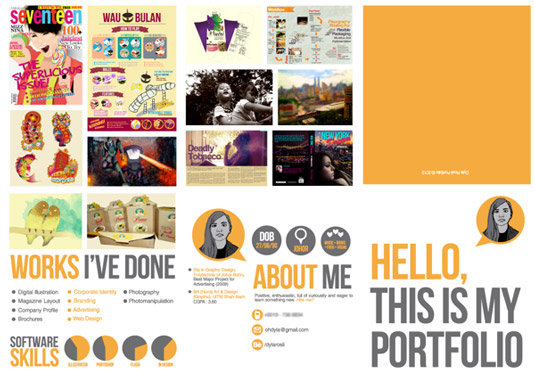
Feedback
Har ikke forstået opgaven...
Jeg skulle beskrive hvilke designteknikker og teorier fra undervisningen jeg har benyttet. Det skulle beskrives i rapporten.
På den måde skulle jeg bevise at jeg har bevist og forstået det der er foregået i timerne.
Der manglede måske lidt en headline eller et logo som giver indtrykket af mig og hvad det hele går ud på når man ser sitet første gang.
Erhvervskompetencer
Photoshop (billedredigering, filformater)
Grafisk design teori (farvelære, layout, komposition)
Prototyping
Ophavsret
Reflektioner
Ups...
Kan jeg overhoved lære noget? På dansk... Hvis jeg skal skrive så meget.
At implementere en fungerende online version af ens portfolio i form af et website, som man udvikler fra grunden ved hjælp af HTML 5 og CSS 3.
Man skal dokumentere koden og projektstruktur på GitHub.
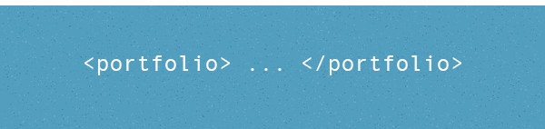
Erhvervskompetencer
Teknisk viden om internettet
Grundlæggende HTML 5 og CSS 3
Kendskab til en IDE (integrated development environment)
Optimering af billeder og grafik til web
Versionsstyring via GitHub
Logisk navngivning og strukturering af filer, web projekt struktur
FTP upload til eget domain
Feedback
Meget positive feedback fra læreren: især for det håndtegnede udtryk, jeg havde brugt. Faktisk besluttede jeg at gå væk fra den i det nuværrende projekt, men måske
bruger den igen i det næste semester.
Reflektioner
Men jeg var ikke så tilfredse selv med resultatet. Projektet tog en ny uventet kreativ retning på grund af manglende viden og erfaring.
Mange ting havde jeg fundet ud med DIY principple - bare at prøve at gøre det uden at vide hvad jeg laver.
Download og læs rapport og dokumentation til projektet. Rapportet indeholder beskrivelser af målgruppen, personaer, brugertest, app flowchart, logo,
valg af farver, osv.
Udvalgte artboarder:
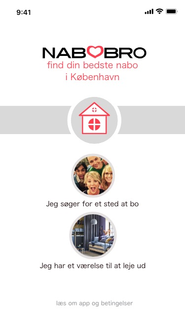 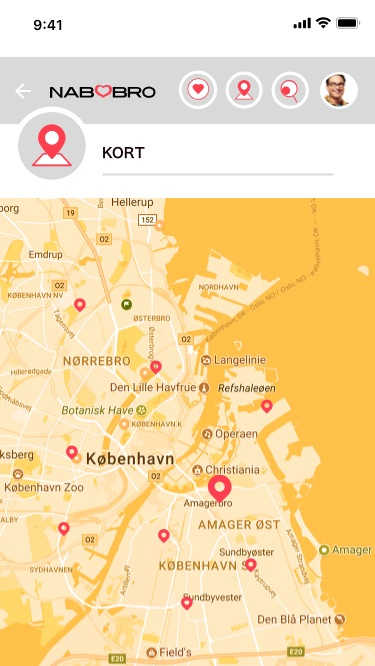 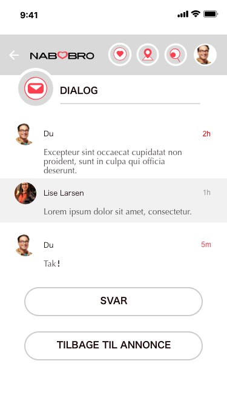 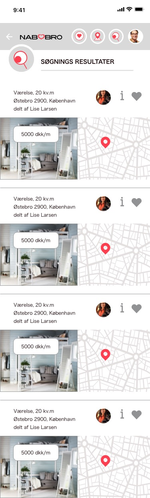 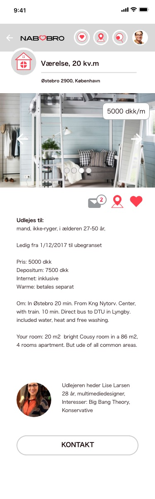 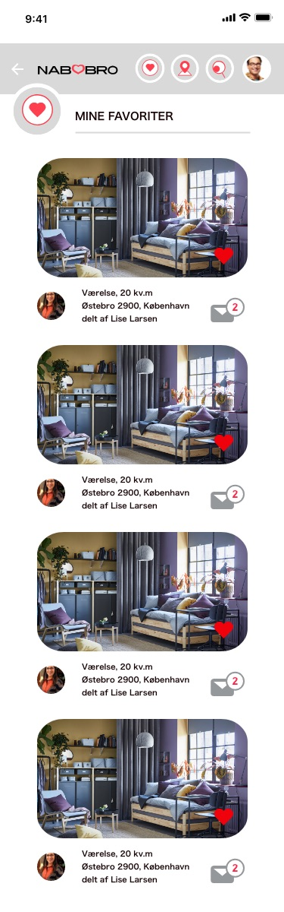
Apps flowchart:
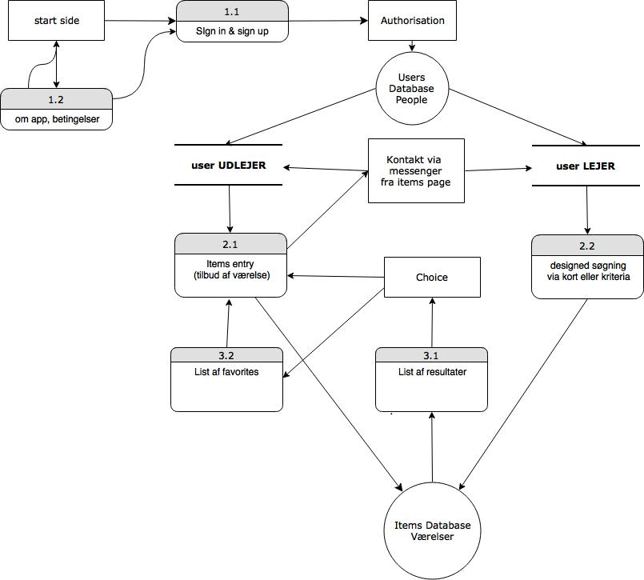
App logo og ikon design:
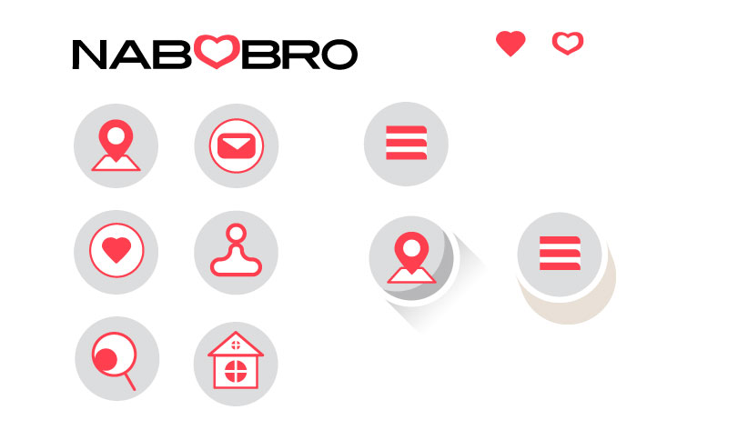
Version 2.0.
...to be added soon... inden exam i den nye version Portfolio 2.1... måske...
Opgave
At udvikle en prototype på en app. Via dataindsamling, personas og tests skal man idéudvikle og designe en app gennem brug af Adobe Illustrator, Photoshop og XD. En unik løsning skal præsenteres via f.eks. Adobe XD samt en skriftlig
aflevering.
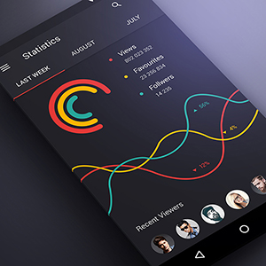
Rapporten skal beskrive prototypen og visuelt dokumentere udviklingen, som fx en visuel logbog med kommenterede billeder/screendumps. Som minimum forventes:
Kort beskrivelse af målgruppen (via 2 "personaer")
App flowchart (fx tegnet i Illustrator)
Dokumenter udvikling af screen mobile phone og tablet layout
Dokumenter udvikling af app ikon design
Kort opsummering af resultater af brugertest (tænke-højt test)
Erhvervskompetencer
Grundlæggende færdigheder i arbejde med vektorgrafik
Viden om grafik og ikoner til digitale interfaces
Viden om farver og farvesystemer
Viden om typografi
Viden om designprincipper ved layout af digitale interfaces
Viden om brugertest
Viden om dataindsamling
Feedback
Fik mine study points.
Reflektioner
Jeg elsker stadig min design idee. Derudover har jeg lært XD i processen.
Jeg blev så inspereret i løbet af skrivning af dokumentationen, så endeligt har jeg næsten brugt alle tilladte ord på beskrivelsen af personaer. Jeg anbefaler stærk at læse min rapport til projektet.
Jeg har desværre ikke talt med en lærer om projektet, for jeg har afleveret det for sent.
Hjemmeside af en fiktive virksomhed Sweetbothttp://okomaro.bplaced.net/sweetbot/ i samarbejde med Miki Janus Therkildsen (M) og Joakim Seneka (J)
- gruppe MOJ.
Download og læs rapport og dokumentation til projektet. Rapportet indeholder beskrivelse af samarbejdsproces principper i arbejdsgruppen, arbejdsinstrumenter,
målgrupper analyse, personer, PBS - Projekt breakdown structure, WBS - Work breakdown med deadlines, farveskema, samt opdateret stylebook med de nye elementer af fiktive eCommerce solution Hotbot.
At udvikle et responsivt website (prototype) for det fiktive webbureau Sweetbot ved hjælp af webbureauets styleguide sammen med to andre gruppemedlemmer.
Udover den tekniske løsning, skal man give et bud på visuelle elementer samt informationarkitektur til sitet. Sweetbot har en style guide som skal følges (se og download .pdf fil) samt et logo som skal implementeres (se og download .eps fil).
Sweetbots egen e-commerce løsning under navnet HotBot mangler et logo samt ikoner til løsningen. Dette skal man også udvikle og demonstrere i den online website løsning. Logoet skal desuden tilføjes den aktuelle styleguide.
Derudover skal der foretages en brugertest af sitet.
Erhvervskompetencer
Implementering af design guidelines
Kendskab til web responsive design
Kendskab til jQuery plugins
Projektplanlægning
Arbejde i mindre teams
Feedback
Fik mine study points.
Refleksion
Det var interessant at arbejde sammen med andre.
Jeg har taget mest af de Illustrator opgaver, Information infrastruktur samt hele process af uploading af hjemmesidet på nettet på min FTP til tiden.
Jeg kunne desværre ikke deltage på presæntationsdag d.25.11, derfor har ikke fået at vide, hvad der skal ændres. Men jeg ved godt, at vi manglede tid til at lave hjemmesidet responsive.